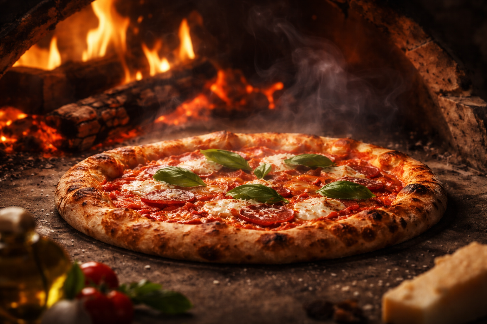
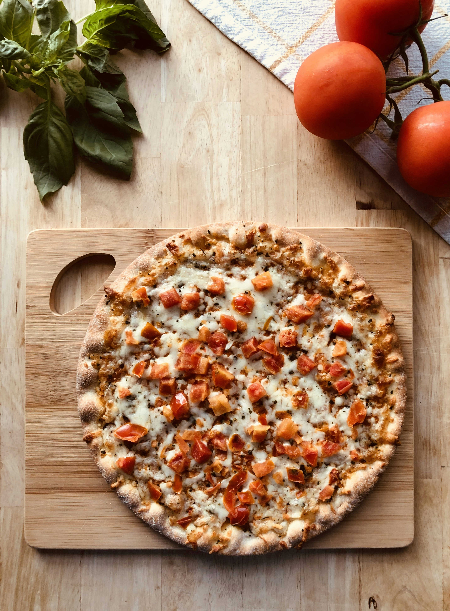
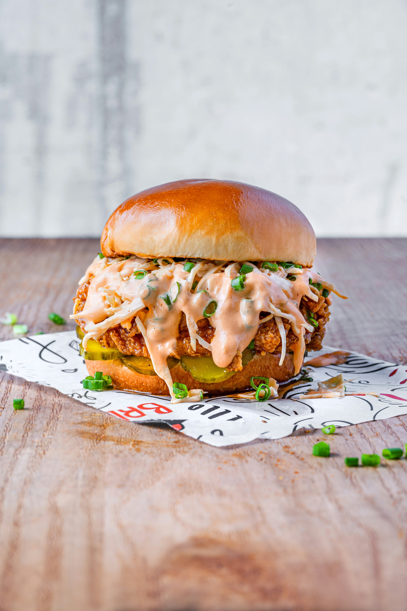

Pizzas
Margarita PRO · Pepperoni · Trufa · BBQ Pollo
En Brasa & Masa trabajamos con fuego real y masa bien fermentada, porque creemos que los sabores auténticos no necesitan atajos. Cada receta nace de la pasión por lo sencillo y lo honesto: ingredientes de calidad, combinaciones cuidadas y un proceso que respeta el tiempo que cada masa necesita para desarrollar su carácter. Apostamos por recetas que enamoran desde el primer bocado: panes crujientes, pizzas ligeras y sabrosas, y platos que celebran lo tradicional sin complicaciones innecesarias. Nuestro objetivo no es impresionar con adornos, sino conquistar con sabor, aroma y textura. Aquí, la honestidad de los ingredientes y la dedicación en la preparación se reflejan en cada plato que servimos. En Brasa & Masa cada comida es una invitación a disfrutar con todos los sentidos, a compartir momentos y a recordar que lo bueno se construye con paciencia, pasión y un toque de fuego real.


Margarita PRO · Pepperoni · Trufa · BBQ Pollo

Smash clásica · Doble queso · BBQ bacon · Picante

Patatas crujientes · Alitas · Brownie
Disponible en plataformas de reparto o para recoger en local. Rápido, caliente y
sin postureo